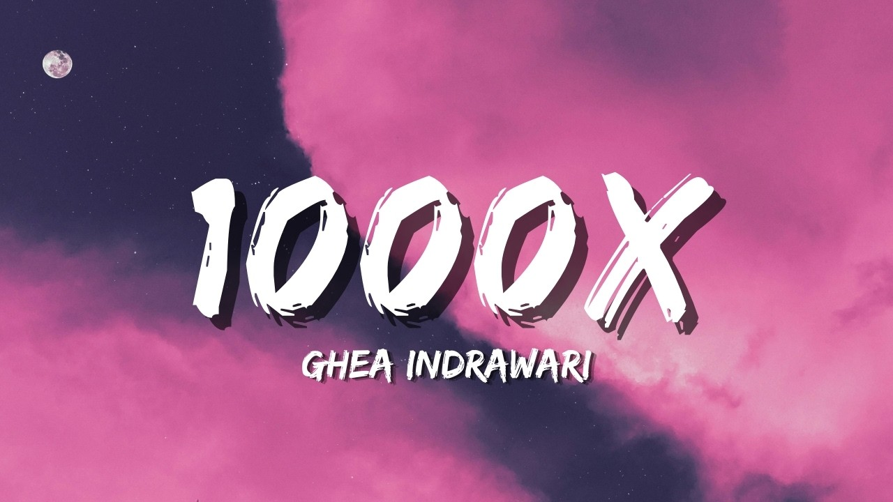
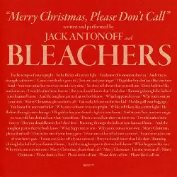
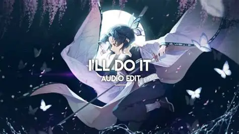
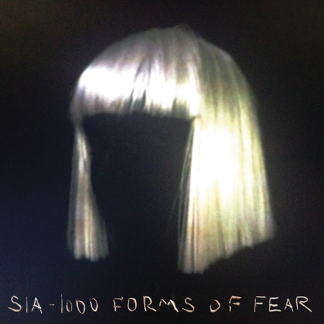
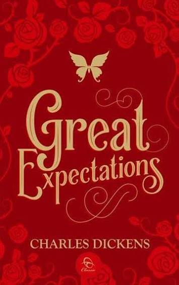

Kurumi MD
Bot dengan fitur paling lengkap, memakai API global.
- Versi
- 0.1
- Fitur
- 1500+
- Rating
- 4,4
Memuat tampilan…
Saya membuat bot WhatsApp multi device. Tiga bot sudah dibuat, satu masih dikerjakan.
> .menu
Kurumi MD: halo! ada 1500+ fitur di sini.
Kurumi MD: ketik nama fitur untuk mulai.
>
Bot dengan fitur paling lengkap, memakai API global.
Bot ringan dengan fitur dasar, memakai API global.
Bot premium, sekitar 95% berbasis scrape penuh.






Artis
Tekan Spasi atau Klik/Tap layar untuk loncat.
Saya VaLen. Saya suka membuat bot yang benar-benar dipakai orang di WhatsApp dan lain lain, dari yang sederhana sampai yang kompleks.
Setiap bot punya rilis sendiri, jadi kamu bisa pilih yang sesuai kebutuhan.